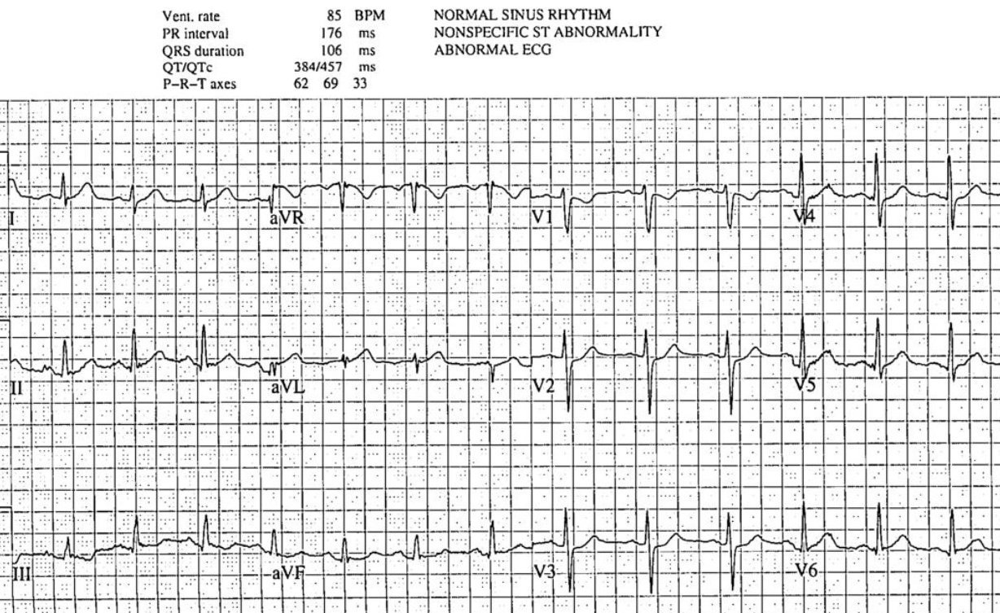
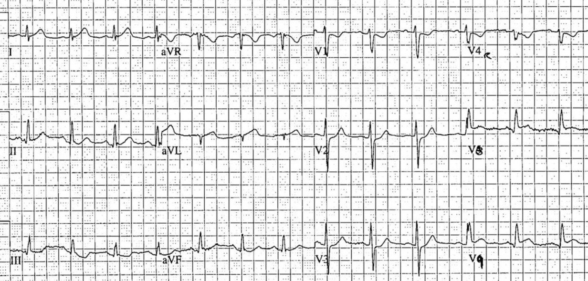
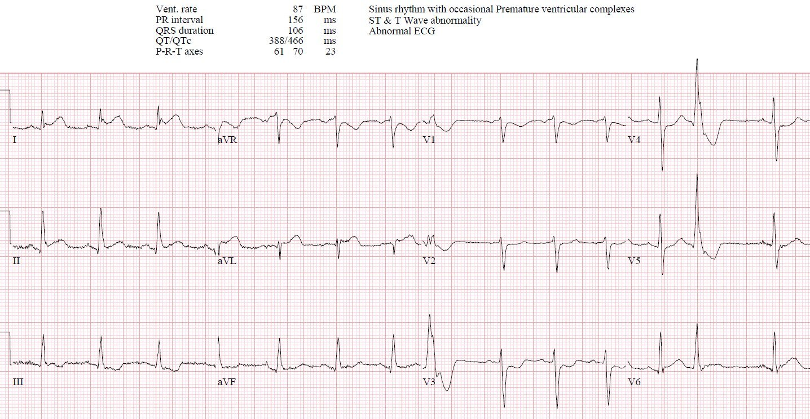
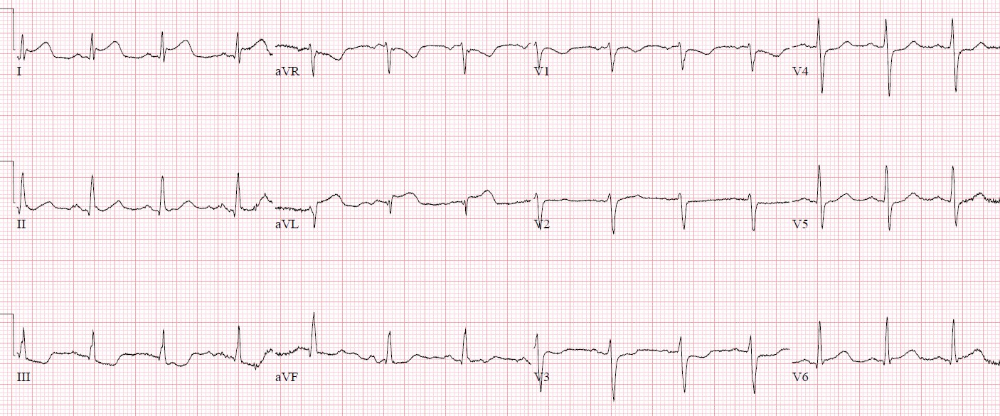
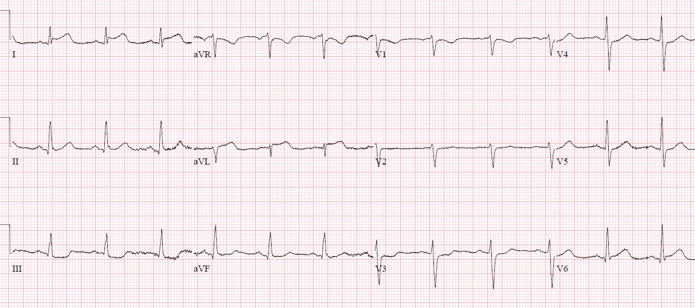
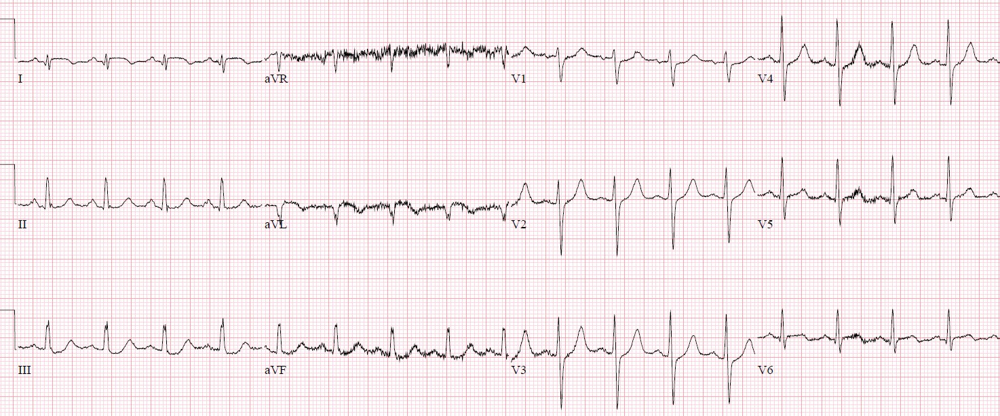
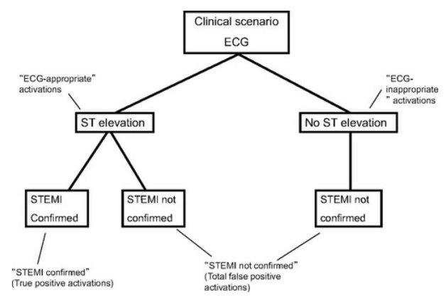

16/03/2022 — Kích hoạt phòng thông tim sai hay hủy kích hoạt sai?
Bản dịch tiếng Việt của bài "False cath lab activation or false cancellation?" – Dr. Smith’s ECG Blog. Giữ nguyên toàn bộ 7 hình ảnh của bản gốc.
Tác giả: Jesse McLaren
Một người 40 tuổi đột ngột đau ngực lan lên hàm,
kèm vã mồ hôi và nôn. Bạn nghĩ gì?


Bạn nghĩ gì?
Nhịp xoang bình thường với dẫn truyền bình thường, trục bình thường,
tăng tiến sóng R bình thường và điện thế bình thường. Có sóng T tối cấp ở I/aVL
và có thể cả V5-6, kèm thay đổi soi gương (reciprocal) ở III. Cũng có ST chênh xuống ở
V1-3. Kết quả đọc bằng máy tính ghi điện tâm đồ này là “không đặc hiệu”, và nó
không đạt tiêu chuẩn STEMI. Nhưng có những bất thường do thiếu máu cục bộ ở
đa số chuyển đạo, cộng lại thành một điện tâm đồ chẩn đoán nhồi máu cơ tim do tắc (Occlusion
MI, OMI) vùng sau-bên.
Nhân viên cấp cứu ngoài viện trước đó đã ghi một điện tâm đồ và lo ngại
nhồi máu cơ tim thành sau, nên họ đã cho dùng ASA/nitro và đưa bệnh nhân
thẳng tới phòng thông tim (cath lab). Bệnh nhân đến đơn vị chăm sóc mạch vành (CCU) với 90 phút đau
ngực kéo dài liên tục, tại đó điện tâm đồ ở trên được ghi, tiếp theo là một điện tâm đồ 15 chuyển đạo 4
phút sau.


Lúc này có sóng Q cấp và đoạn ST dạng lồi ở aVL,
và ST chênh lên nhẹ ở các chuyển đạo phía sau V8-9, một lần nữa xác nhận
OMI sau-bên. Nhưng bác sĩ tim mạch không cho rằng nó đạt tiêu chuẩn STEMI, nên
bệnh nhân được chuyển xuống khoa cấp cứu để đánh giá.
Bệnh nhân đến khoa cấp cứu (ED) vẫn còn đau ngực và
một điện tâm đồ khác được ghi:


Lúc này có ST chênh lên nhẹ ở I/aVL và ST chênh xuống
sâu hơn ở V3, xác nhận OMI sau-bên đang diễn ra. Bác sĩ
cấp cứu cho thêm nitro và gọi báo động STEMI (Code STEMI).
Khoa tim mạch đánh giá bệnh nhân tại khoa cấp cứu bằng các điện tâm đồ liên tiếp
trong giờ tiếp theo, trong thời gian đó cơn đau ngực vẫn tiếp diễn và kết quả troponin I độ nhạy cao lần đầu trả về là 100 ng/L (bình thường <26).




Có OMI sau-bên đang diễn ra, ở một bệnh nhân đau ngực
kháng trị và troponin dương tính. Nhưng khoa tim mạch cho rằng hình ảnh này không nhất quán
đạt tiêu chuẩn STEMI, và ghi nhận cơn đau tái hiện được khi ấn chẩn và
không đỡ khi dùng nitro, nên họ cho dùng morphin và yêu cầu chụp CT ngực để
loại trừ bóc tách. Nhưng đau ngực tái hiện được khi ấn hay các dạng đau ngực không điển hình khác không loại trừ được nhồi máu
cơ tim ở một bệnh nhân có xác suất tiền nghiệm cao như vậy; morphin
có liên quan với tái tưới máu chậm trễ; và đau ngực do thiếu máu cục bộ kháng trị là một
chỉ định đưa vào phòng thông tim ngay cả khi không có thay đổi trên điện tâm đồ.
CT phát hiện vôi hóa động mạch vành nhưng không có bóc tách
động mạch chủ. Bệnh nhân vẫn còn đau, với troponin lặp lại là 400 ng/L.
Khoa tim mạch đánh giá lại bệnh nhân và chẩn đoán NSTEMI, điều trị bằng
ticagrelor/heparin/nitro và thông tim không khẩn. Do đau ngực kháng trị,
bệnh nhân được dùng nhiều liều morphin trong vài giờ nữa tại
khoa cấp cứu, rồi sau đó mới được đưa vào phòng thông tim. Chụp mạch vành phát hiện
tắc 99% nhánh bờ tù thứ nhất, đúng như dự đoán từ điện tâm đồ đầu tiên, với dòng chảy TIMI-1.
Dưới đây là điện tâm đồ ngày hôm sau:


Sóng T ở I/aVL/V6 đã xẹp về kích thước bình thường và
xuất hiện sóng T đảo ngược do tái tưới máu, kèm sóng Q vẫn còn ở aVL, và sóng T
cao hơn ở các chuyển đạo trước do tái tưới máu thành sau.
Troponin đỉnh là 50.000 ng/L và siêu âm tim thấy EF 50%
kèm rối loạn vận động thành vùng đáy/bên. Chẩn đoán ra viện là “NSTEMI”, hàm ý rằng việc kích hoạt phòng thông tim là sai và việc hủy kích hoạt là phù hợp.
Kích hoạt hay hủy kích hoạt sai/không phù hợp?
Có nhiều
nghiên cứu về kích hoạt phòng thông tim dương tính giả và không phù hợp. “Kích hoạt dương tính
giả” là một thuật ngữ hồi cứu dành cho những bệnh nhân mà kết quả chụp mạch vành không cho thấy
tổn thương thủ phạm.(1-7) Nhưng đây là một nhóm không đồng nhất, bao gồm “kích hoạt
dương tính giả phù hợp” (gồm các hình ảnh giả STEMI như takotsubo, co thắt
mạch vành hay viêm cơ tim, vốn chỉ có thể chẩn đoán sau khi chụp mạch vành đã loại trừ
tắc mạch vành cấp) và “kích hoạt phòng thông tim không cần thiết” (đọc điện tâm đồ
sai và đã loại trừ nhồi máu cơ tim).(8) Đáng tiếc là “kích hoạt không phù hợp”
đã dần mang nghĩa là bất kỳ lần kích hoạt phòng thông tim nào bị bác sĩ tim mạch hủy
vì điện tâm đồ không đạt tiêu chuẩn STEMI. Cách này định nghĩa “sự phù hợp” bằng dấu ấn thay thế là tiêu chuẩn STEMI, chứ không phải bằng kết cục thực sự là tắc mạch vành cấp. Nếu phòng thông tim được kích hoạt cho NOMI STEMI dương tính (STEMI(+)NOMI) (ví dụ ST chênh lên không do thiếu máu cục bộ mà do LVH hay tái cực sớm, với tổn thương không gây tắc và dòng chảy TIMI-3) thì vẫn có thể được xếp là phù hợp; trong khi kích hoạt phòng thông tim cho OMI STEMI âm tính (STEMI(-)OMI) (tức là không đạt tiêu chuẩn STEMI nhưng thực sự có động mạch bị tắc) lại có thể bị coi là không phù hợp. Nhiều
nghiên cứu đã loại các bệnh nhân “kích hoạt không phù hợp” khỏi phân tích
tiếp theo, rồi chia các trường hợp “kích hoạt phù hợp” thành STEMI dương tính thật
và STEMI dương tính giả. (9-11) Nhưng còn các STEMI âm tính giả, các trường hợp hủy kích hoạt sai và
hủy kích hoạt không phù hợp, như bệnh nhân của chúng tôi ở trên thì sao?
Theo
mô hình STEMI, không hề có cái gọi là STEMI âm tính giả, vì theo định nghĩa đây
là “Non-STEMI”—dù 25-30% NSTEMI có động mạch bị tắc hoàn toàn
và tỷ lệ tử vong cao gấp đôi.(12) Đây là điều mà Smith/Meyers gọi là
“nghịch lý không có âm tính giả” (no false negative paradox). Ngay cả những nghiên cứu đã xem xét kết cục của
“kích hoạt không phù hợp” cũng phủ nhận khả năng có STEMI âm tính giả.
Mixon và cs. có một hình minh họa điều này:


Theo cách phân loại này, các lần kích hoạt dựa trên tiêu chuẩn
STEMI được coi là phù hợp và được xếp thành dương tính thật hoặc dương tính
giả dựa trên kết quả chụp mạch vành, còn các lần kích hoạt không có tiêu chuẩn STEMI thì theo
định nghĩa là không phù hợp và dương tính giả bất kể kết quả chụp mạch vành—dù
41% nhóm này sau đó được chẩn đoán là “NSTEMI/UA”, một
nhóm không đồng nhất gồm STEMI(-)OMI, NOMI và đau thắt ngực không ổn định.(13) Shamim
và cs. thấy 5 trong 62 “lần kích hoạt không phù hợp” (8%) cần thông tim cấp cứu
nhưng tất cả đều được chẩn đoán là “Non-STEMI”.(14) Tương tự, Degheim và cs. thấy 2
trong 37 lần hủy kích hoạt (5,4%) là “bị hủy nhầm và được phát hiện là STEMI
thực sự khi bệnh nhân được chụp mạch vành sau đó vì đau ngực không thuyên giảm
và dấu ấn sinh học dương tính”.(15) Nhưng những bệnh nhân này không phải là “STEMI thực sự”, họ
là STEMI(-)OMI.
Nếu STEMI âm tính
giả không tồn tại, thì hủy kích hoạt phòng thông tim không phù hợp cũng không tồn tại—ngay cả
khi nó dẫn đến tử vong cho bệnh nhân như ca này hay ca này. Chỉ có một nghiên cứu về
hủy kích hoạt phòng thông tim không phù hợp, nhưng nghiên cứu này định nghĩa đó là các điện tâm đồ đạt
tiêu chuẩn STEMI, ở bệnh nhân đau ngực điển hình ≤12
giờ, không có chống chỉ định nhưng không được đưa đi thông tim, và được khẳng định
nhồi máu cơ tim.(16)
Chỉ 1% số lần hủy kích hoạt đáp ứng định nghĩa hẹp này, nhưng 18% bị hủy
vì “thay đổi ST-T không phù hợp với STEMI”, 25% bị hủy vì
blốc nhánh hoặc nhịp tạo nhịp, và 10% cần PCI. Bao nhiêu trong số này là
hủy kích hoạt không phù hợp, với điện tâm đồ chẩn đoán STEMI(-)OMI?
“Kích hoạt
phòng thông tim phù hợp” nên dựa trên kết cục của bệnh nhân được hưởng lợi từ tái tưới máu
cấp cứu—tắc mạch vành cấp—và tiêu chuẩn kích hoạt phòng thông tim
nên được mở rộng ra ngoài tiêu chuẩn STEMI kinh điển để tích hợp những tiến bộ mới nhất.(17)
Hiện nay điều này bao gồm các tiêu chuẩn điện tâm đồ dựa trên bằng chứng có thể nhận diện OMI và
phân biệt nó với các hình ảnh giả,(18) vốn nhạy gấp đôi tiêu chuẩn STEMI
mà vẫn giữ được độ đặc hiệu (19). Mô hình STEMI đã giới hạn các chỉ số chất lượng
như thời gian từ cửa đến bóng (door-to-balloon) chỉ cho OMI STEMI dương tính (STEMI(+)OMI), nhưng chúng ta cần áp dụng chúng cho
mọi bệnh nhân tắc mạch vành cấp, kể cả STEMI(-)OMI.(20). Nếu chúng ta
dùng các chỉ số cân bằng như kích hoạt sai hoặc không phù hợp để theo dõi và phòng ngừa
việc kích hoạt phòng thông tim quá mức, chẳng phải chúng ta cũng nên theo dõi việc hủy kích hoạt sai hoặc không phù hợp
để giám sát và phòng ngừa tái tưới máu chậm trễ hay sao?
Điều cần nhớ:
1.
ST chênh xuống nguyên phát ở V1-4 là OMI thành sau
cho đến khi chứng minh được điều ngược lại. Điện tâm đồ 15 chuyển đạo có thể cho thấy hoặc không cho thấy ST chênh lên, nhưng cũng có thể cho thấy các thay đổi động ở thành trước và thành dưới/bên
2.
OMI thành bên có thể kín đáo nhưng thường có thể
nhận diện được nhờ sóng Q cấp, ST chênh lên kín đáo, đoạn ST dạng lồi,
sóng T tối cấp, và thay đổi soi gương ở thành dưới
3.
Đau ngực tái hiện được khi ấn không loại trừ OMI ở
bệnh nhân có xác suất tiền nghiệm cao, và morphin có liên quan với tái tưới máu chậm trễ
4.
Thay vì giới hạn “báo động STEMI” cho
STEMI(+)OMI, việc kích hoạt phòng thông tim phù hợp cần được mở rộng để bao gồm
các dấu hiệu điện tâm đồ của STEMI(-)OMI và các dấu hiệu lâm sàng như thiếu máu cục bộ kháng trị
5.
Khi phòng thông tim bị hủy kích hoạt vì không đạt tiêu chuẩn
STEMI, nhưng sau đó bệnh nhân được phát hiện có tắc mạch vành
cấp, thì không nên gán nhãn là “NSTEMI” với “hủy kích hoạt phù hợp”
mà là STEMI(-)OMI với hủy kích hoạt không phù hợp
Tài liệu tham khảo:
1. Larson. ‘False-positive’ cardiac
catheterization laboratory activation among patients with suspected ST-segment
elevation myocardial infarction. Tạp chí JAMA, 2007
2. Yougquist và cs. A comparison of
door-to-balloon times and false-positive activations between emergency
department and out-of-hospital activation of the coronary catheterization team.
Tạp chí Acad Emerg Med, 2008
3. Nfor. Identifying false-positive
ST-elevation myocardial infarction in emergency department patients. Tạp chí J of Emerg
Med, 2012
4. Chung và cs. Characteristics and
prognosis in patients with false-positive ST-elevation myocardial infarction in
the ED. Tạp chí Am J Emerg Med, 2013
5. Groot và cs. Characteristics of patients
with false-ST-segment elevation myocardial infarction diagnoses. Tạp chí Eur Heart J,
2016
6. Shoaib và cs. Impact of pre-hospital
activation of STEMI on false positive activation rate and door to balloon time.
Tạp chí Heart, Lung and Circ, 2022
7. McCabe và cs. Prevalence and factors
associated with false-positive ST-segment elevation myocardial infarction
diagnoses at primary percutaneous coronary intervention-capable centers: a
report from the Activate-SF Registry. Tạp chí Arch Intern Med, 2012
8. Kontos và cs. An evaluation of the accuracy
of emergency physician activation of the cardiac catheterization laboratory for
patients with suspected ST-segment elevation myocardial infarction. Tạp chí Ann Emerg
Med, 2010
9. Lu và cs. Incidence and characteristics
of inappropriate and false-positive cardiac catheterization laboratory
activations in a regional primary percutaneous coronary intervention program.
Tạp chí Am Heart J, 2016
10. Boivin-Proulx và cs. Effect of real-time
physician oversight of prehospital STEMI diagnosis on ECG-inappropriate and
false positive catheterization laboratory activation. Tạp chí CJC Open, 2021
11. Garvey và cs. Rates of cardiac
catheterization cancelation for ST-segment elevation myocardial infarction
after activation by emergency medical services or emergency physicians: results
from the North Carolina Catheterization Laboratory Activation Registry. Tạp chí Circ,
2012
12. Khan và cs. Impact of total occlusion of
culprit artery in acute non-ST elevation myocardial infarction: a systematic
review and meta-analysis. Tạp chí Eur Heart J, 2017
13. Mixon. Retrospective description and
analysis of consecutive catheterization laboratory ST-segment elevation
myocardial infarction activations with proposal, rationale, and use of a new
classification scheme. Tạp chí Circ Cardiovasc Qual Outcomes, 2012
14. Shamim và cs. Electrocardiographic
findings resulting in inappropriate cardiac catheterization laboratory
activation for ST-segment elevation myocardial infarction. Tạp chí Cardiovasc Diagn
Ther, 2014
15. Degheim và cs. False activation of the
cardiac catheterization laboratory: the price to pay for shorter treatment
delay. Tạp chí JRSM Cardiovasc Dis, 2019
16. Lange và cs. Cancellation of the cardiac
catherization lab after activation for ST-segment-elevation myocardial
infarction: frequency, etiology, and clinical outcomes. Tạp chí Circ Cardiovas Qual
Outcomes, 2018
17. Rokos và cs. Appropriate cardiac cath lab
activation: optimizing electrocardiogram interpretation and clinical
decision-making for acute ST-elevation myocardial infarction. Tạp chí Am Heart J, 2010
18. Aslanger, Meyers, Smith. Recognizing
electrocardiographically subtle occlusion myocardial infarction and
differentiating it from mimics: ten steps to or away from the cath lab. Tạp chí Turk
Kardiyol Dern Ars, 2021
19. Meyers và cs. Accuracy of OMI ECG
findings versus STEMI criteria for diagnosis of acute coronary occlusion
myocardial infarction.
20. McLaren, Meyers, Smith, và cs. From
STEMI to occlusion MI: paradigm shift and ED quality improvement. Tạp chí CJEM, 2021